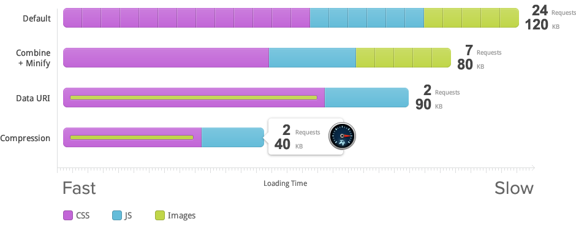

由UIkit中文网翻译
一款快速和简洁的主题框架
它提供了丰富的工具集，用于开发跨平台的主题
使用精心设计的框架，轻松创建属于你的主题。
Warp 框架支持 Joomla 和 Wordpress，并且可以扩展运行于其他系统中。
主题可以在已支持的系统间轻松移植，并保留其所有功能。
Warp 框架单独存放在其文件夹中，无耦合。
只需选择你需要的框架工具，便可轻松添加新功能。
Warp 框架经过精心的设计与编码，具有最佳的加载速度。
完全建立在最新的Web技术基础上，如 HTML5，CSS3 和 PHP5.2+
六大特色助你简化开发流程
响应式布局，完美适配所有分辨率的设备，手机、平板、台式计算机均不在话下。
充分利用 HTML5 实现跨平台开发，语义化 HTML 标签助力搜索引擎优化。
基于UIkit ——一款轻量级、模块化的前端框架开发，提供强大的前端界面支持。
巧妙的JavaScript设计，低调奢华地增强用户体验。
Warp 主题框架为你带来具有广泛用途的模块化布局解决方案，轻松定制布局与样式。
通过继承或覆写默认主题资源进行子主题样式定制。
Combine, minify, cache and compress CSS and JavaScripts on the fly. Reduce HTTP requests with Data URIs.
由UIkit中文网翻译